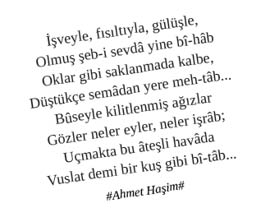

Gece Hayatı Motivasyonları
“Erkek erkeğe eğlencenin dibine vurup, sınırları aşacağız. Sabah hiçbir şey hatırlamamaya ve Hangover filminin hakkını vermeye and içtik.”
“Biz geldik!” (Mekânın müdavimiyiz, herkes bizi tanır. Düzenli olarak gitmezsek bünyemizde derin sıkıntılar meydana geliyor.)
“Yeter artık hayatımın erkeğini bulmak istiyorum!”
Yanında kendilerine baktıracak kadar güzel ve havalı kızlarla (en az iki, en çok dört) mekân mekân dolaşma, “Hepsi benim olm, siz abaza abaza dolaşın” mesajını verme.
“Bu gece mekândan erkek kaldırabilir miyiz?”
“One night stand kişinin kendine yakışanı giymesidir.”
“Tarjan’ın doğum gününü kutluyoruz. Canlı müzik de var.”
“Pakize’ye kıl oluyorum, erkek arkadaşını bu gece elinden alacağım.”
“Dün gece yaşadıklarımızı size bir anlatsam” (ofis ortamlarında yüksek rating toplayan bir söylem).
“Hep erkekler mi eğlenecek? Toplum bunu bize dayatıyor ama kimin umurunda. Kız kıza çılgınlığın sınırlarında raks edeceğiz, inceldiği yerden kopsun.”
Profesyonel hayatın vazgeçilmezi “Networking”in kralı gece hayatında yapılır.
“Yeter artık hayatımın kızını bulmak istiyorum.”
“İremsu’nun bekârlığa vedası var bu gece. Hepimiz kafamıza duvakları takacağız, damadın resmi olan tshirt’leri giyeceğiz ve Facebook’ta kendimizi tag’leyeceğiz.”
“Beni aldattı, intikamım çok acı olacak!”
“Selinsu’ya uzun süredir ofiste yazıyorum, salağa yatıyor, bu gece shot’ları dayadım mı her şey bitecek!”
“Bu akşam mekândan kız kaldırabilir miyiz?”
Organizasyon Süreci
Haftanın iki günü (cuma / cumartesi) profesyonel olarak trendy bir mekâna, haftanın bir günü (hafta içi) alternatif salaş “Olm herkes bilmez burayı, trick bir mekân” mesajını verecek bir mekâna gitmek için düzenli organizasyon yapılır.
Gece dışarı çıkarken iş arkadaşlarından ziyade farklı çevrelerden karışık bir arkadaş grubu ile gidip; gidilen mekânlarda iş arkadaşları ile karşılaşmak daha profesyoneldir.
Birlikte gidilecek grubun tamamının erkek ya da tamamının kız olması hiç profesyonel değildir.
“Nereye gidelim?” sorusu ortada iken ekibin arasından birinin sıyrılıp “X, Y, Z, K, L, M mekânlarından herhangi birine gidebiliriz. Ben rezervasyon işini organize ederim. Mekânlar tanıdık” demesi çok şık durur.
Gidilecek mekâna karar verilirken, “X mekânının fiyatları şöyle, Y mekânının fiyatları böyle, Z mekânının valesi para almıyor, K mekânında vestiyer bedava, l mekânında tuvalette jöle var” gibi konulara girmek büyük görgüsüzlüktür.
Mekâna karar verildikten sonra mutlaka Twitter üzerinden “Bu akşam asfalt ağlayacak, duyun ey dost, düşman, follower, ex-dünyası” mesajları itina ile verilmeli, gülücükler havada uçuşmalı, duyulan heyecan tüm follower’lar nezdinde dibine kadar hissedilmelidir.
Mekâna karar verildikten sonra kızlar arasındaki “Ne giyeceksin, ne takacaksın, hangi renkleri kullanacaksın, yanına neler alacaksın, çantana neler koyacaksın...” şeklinde büyüyen bir soru yumağı email, BBM, WhatsApp gibi araçlar eşliğinde cevaplanmaya, ekip içerisindeki bilgi seviyesi eşdüzeye getirilmeye çalışılır. Böylece patlama, pişti olma, frapan kaçma gibi riskler asgari düzeye çekilir.
İşten çıkar çıkmaz mekâna gitmek pek şık durmaz. Spor, kuaför, arkadaşın evi, kendi evi mutlaka es verilmesi ve ilgili hazırlıkların yapılması gereken pit stop noktalarındandır.
Kızların mekâna gitmeden önce bir evde toplanıp eşya değiş tokuş etmesi ve ortamda “Sudenaz senin X marka fuşya çantan benim Y marka fuşya ayakkabılarıma uyar, bu gecelik alabilir miyim? Hamit’e özel görünmek istiyorum bu akşam” söylemlerinin havada uçuşması büyük puan kaybettirir.
Eğlenmeden önce şık olan, gidilecek mekâna yakın trendy bir yerde yemek yemektir. Yenecek yemekler mutlaka hafif olmalıdır. Hayvan gibi lavaşa, kebaba, sarmısağa abanıp akabinde geğire geğire eğlenmeye gidilmez.
Kılık Kıyafet, Hazırlanma Süreci
Kadınlar
Gece dışarı çıkarken alınacak çanta mutlaka küçük olmalı. Eşek kadar çanta ile mekâna gitmek hiç profesyonel değildir.
Çantanın içerisine; ruj, kredi kartı, kimlik, cash para, allık haricinde herhangi bir şey koymak şık durmaz.
“Non-branded” görünümlü, markalarının önplanda olmadığı (damgalı inek imajı vermeyen) kaliteli sade kıyafetler tercih edilmelidir.
Çok abartı açık, renkli, dikkat çekici giyinmek büyük puan kaybettirir (Sırt, göğüs dekoltesi ile mini etek kombinasyonu gibi).
13 pt topuk ve topuklu ayakkabı kullanım yetkinliği profesyonelliğin aynasıdır. Hayatında ilk defa topuklu ayakkabı giymiş gibi acemice yürümek, sürekli önüne bakmak hiç şık durmaz.
Vestiyere para vermemek için kışın ortasında mekâna çıplak gelmek (mont palto vs almadan) büyük görgüsüzlüktür.
Fön, profesyonelin kartvizitinin yansımasıdır. Fönsüz gece dışarı çıkmak kabul edilemez. Olur da çıkma zorunluluğu hasıl olursa mutlaka saç toplanır, jöle sürülür. Bu şekilde de saç kurtarılamazsa imdada topuz yetişir ve ziyadesiyle profesyonel durur.
“Gecenin karanlığına aldanma, manikürsüz maça çıkma” diyen profesyonel ataların sözlerini dinlemek gerek. Olur da manikürsüz sahaya çıkma durumu doğarsa mutlaka tırnak eti yağını değerlendirmek profesyonel tercihtir.
Parfüm tercihinde mutlaka piyasadaki profesyonellerin yaygın olarak kullanmadığı, yurtdışından alınmış özel bir parfüm tercih edilmelidir. Evden çıkarken kapıda iki fıs daha sıkmak ekstra profesyonellik göstergesidir.
Erkekler
Gün içerisinde takım elbise giymek profesyonel iken, gece hayatında takım elbise daha çok düğün kıyafeti olarak algılandığından çok tercih edilmemelidir. Hele ki üstüne kravat takmadan gömleğin yakasını bağrını açmak, boynunda profesyonellikten istifa dilekçesi ile dolaşmaktır.
Hayvan gibi jöle, wax sürüp saçları dikmek, saçları taç yardımıyla geriye yatırmak profesyonellikten uzak bir harekettir. Gece yarısından sonra vakit geçsin diye yayınlanan dandik polisiye filmlerde rol almak için ise ideal bir kılıktır.
“Non-branded” görünümlü, markalarının önplanda olmadığı (damgalı inek imajı vermeyen) kaliteli, sade kıyafetler tercih edilmelidir.
Yakalı tshirt giyip yakalarını havaya kaldırmak Starbucks kuyruğunda benzin döküp kendini yakmaktan farksızdır.
Göğüs düğmelerinden 2-3 tanesi açılmış, insanın gözünü alan parlak gömleklerden uzak durulmalıdır.
Bir kilometreden parlayan sinekkaydı tıraş yerine tadında bir pis sakal daha profesyonel durur.
Giyilen kıyafeti (özellikle kazak, tshirt vs) pantolonun içine sokmak ve pantolonunu göğsüne kadar çekmek büyük puan kaybettirir, hatta giyeni unutulmazlar arasında katar.
Saça şekil verilecek ise tadında bir kullanım ile premium bir jöle ve / veya wax kullanılmalıdır. Limondan ve ucuz jölelerden uzak durulmalıdır.
Jamiroquai şapkalarından takmak kartvizitin ağırlığını hafifletir.
Saat seçimi çok önemlidir. Tercihen bir bakışta herkesin tanımadığı, ama sonrasında Google’a girip arattığında “Oha lan, herifin saati amma pahalıymış!” diyeceği bir saat takmak çok profesyoneldir.
Denge bilekliği, denge kolyesi, denge donu vb şeyleri ele, kola, kıça, başa takıp mekâna gelmek infial yaratır.
Profesyonel erkek boy ortalamasının (1.76 cm) altında olma gibi bir durum söz konusu ise mutlaka ayakkabının içerisine yükseltici tabanlardan yerleştirilmelidir.
Profesyonel dünyanın kıl yönetimi konusunda çok net yaptırımları olduğundan, sırt bölgesinde ve koltukaltı bölgesinde kesinlikle kıl olmamalı, göğüs bölgesinde ise tadında bir kıl yoğunluğu (o da kesinlikle gömleğin 1-2 düğmesi açıldığında gözükmemeli) söz konusu olmalı. Kıl yoğunlukları profesyonel ortalamalarda stabilize edilmeden gece dışarı çıkmak akıllardan bile geçirilmemelidir.
Cüzdanda mutlaka vale, garson, DJ, barmen ve bilimum gece elemanlarına verilmek üzere yeterli miktarda cash tutulmalı, limiti yüksek borcu olmayan prestijli bir kredi kartı da bulundurulmalıdır.
Parfüm tercihinde mutlaka piyasadaki profesyonellerin yaygın olarak kullanmadığı, yurtdışından alınmış özel bir parfüm seçilmeli, sıkılırken taralı alanlar ihmal edilmemelidir.
Mekâna Giriş
Mekâna üzerinde şirket logosu olan araç ile gitmek (Hamit Pazarlama, Talat Ev Aletleri, Pikaçu Pet Shop, Nisa Tur vb) kurumsal şuursuzluğun patolojik izdüşümüdür.
Mekâna; kiralık araç (segmenti ne olursa olsun), standart segment araç (Renault, Fiat, Dacia, Hyundai, Opel, Toyota, vb), yabancı eski model araç, segmenti ne olursa olsun modifiye araç ile gidersen, vale aracını almak yerine “Otopark ileride beyefendi, arkadaki araca bir yol verebilir misiniz?” muamelesi çeker.
Valenin aracı tanıması, uzaktan “Hoş geldin Recep Abim” selamını vermesi ve aracı kafaya çekmesi çok profesyoneldir. Varoş bir araç ile gelip, valeye 5 TL verip “Şefim, hooop, kafaya çekebilir misin? Yürümeyelim” çabası beyhude ve amansız bir çabadır.
Valeye, “Hafız, ne kadar?” veya “Vale ücretli mi?” gibi sorular sormak, şirket geneline gönderilmiş bir mail’e “reply to all” yapıp kredi kartı ekstresini eke koyarak yollamaktan farksızdır.
Valeye aracı teslim ederken herhangi bir numara, kart vs verilmemesi çok profesyoneldir. “Mekânın sürekli ve etkili müdavimlerinden olduğu için Tonguç Abi’ye kart vermiyoruz, aracını doğrudan alıyoruz.”
Mekâna, özel şoför ya da yoldan çevrilmemiş özel bir taksi ile gelmek ve araçtan iniş esnasında şoföre veya taksiye “Ben sana haber veririm, buralarda ol. Gelir alırsın” mesajını vermek çok profesyoneldir.
Mekâna giriş ve çıkışlarda valenin yolu keserek diğer araçları durdurması profesyonel kartvizitinin ağırlığının sembolüdür.
Mekâna, profesyonel olmamasına rağmen erkek erkeğe giriliyorsa, giriş esnasında “Olm biz hep geliyoruz lan bu tip mekânlara, hayvan gibi hesap bırakıyor, garsonları bahşiş manyağı yapıyoruz” edasında olunmalıdır ki kapıda patlatma durumu olmasın.
Mekân kapısının önüne kadar gelip alınmamak, büyük puan kaybettirir. Ağızdan ağıza yayılan “Berkcanları dün kapıdan döndürmüşler olm, almamışlar. Aynen geri dönmüşler” söylemleri gece hayatı kariyerinde sonun başlangıcı olur.
Mekân kapısının önünde elinde telefon ile yalandan “Turgut Abim, selamün aleyküm, biz mekâna geldik, arkadaşlar bizi almıyorlar. Tanımadılar herhalde, madara oluyoruz kapının önünde” söylemleri ile konuşmak ve o esnada telefonun çalması, profesyonel gece hayatına çapraz yan bağların kopması sonucu veda etmek demektir.
Mekân kapısından alınmayınca, mekâna seri bir şekilde “Ulan zaten siz havaya girdiniz. Bizim verdiğimiz hesaplarla büyüttünüz burayı. Başka mekân mı yok? Paçoz bir mekânsınız zaten, arkadaşlar istediği için gelmiştik” tadında bok atılır. Etrafa ses yükseltilerek bakılıp, girişteki diğer müşterilerden de destek beklenir. Eğer diğer müşterilerden herhangi biri de mırıldanırsa söylemlerin desibeli iki katına çıkar.
Mekân kapısında duran görevlinin grup halinde ekibi koyun sayar gibi sayması ve tiplerini beğenmeyip, “Arkadaşlar kusura bakmayın. Yardımcı olamıyoruz. İçeride özel bir parti var. Adınız davetli listesinde yok” ya da “İçerisi maalesef tamamiyle doldu” söylemlerine maruz kalmak profesyonel hayatta “Career Break” almak gerektirir.
Mekâna alınmadığı için kapıda “Sahibini arayayım mı? Tanıyorum” derken mekân sahibinin orada olması ve kendisinin gözünün içerisine bakması sonucunda hakem orta sahayı göstermiştir. Gol kararı kesindir.
Mekâna alınmamasına rağmen inat edip yarım saat sonra mekâna ziyadesiyle açık saçık giyinmiş, yabancı bir kız bularak tekrar girmeyi denemek hiç profesyonel değildir.
Mekân Deneyimi
Kızların aktif mekâna tam olarak girmeden önce tuvalete gidip, üst baş düzeltmeleri, makyaj statü kontrolü yapmaları çok profesyoneldir.
Girer girmez tuvaletin yerini sormak, mekâna ilk defa gelindiğinin kabak gibi bir göstergesi olduğu için tercihen yeri bilinmiyorsa bile tuvaletin yeri sorulmaz.
Vestiyere herhangi bir şey bırakmamak ve / veya “Herhangi bir ücret alınıyor mu? Ne kadar?” gibi sorular sormak, profesyonel bir iş toplantısında mahalle karısı gibi sakız çiğneyip patlatmaktan farksızdır.
Mekânda garson tarafından tanınmak, garsona ismi ile hitap etmek; garsonu, komiyi, DJ’i, mekân müdürünü düzenli olarak yemlemek; loca vs ayarlatmak çok profesyoneldir.
Mekâna girince mekân müdürü tarafından önceden itina ile ayarlanmış locaya doğru eşlik edilmesi fark yaratır.
Mekân içerisinde ismini cismini bilmediğiniz insanlarla yalandan selamlaşmak, uzaktan tebessüm etmek ve “âlemden tanışıyoruz” mesajını vermek çok cool’dur.
Meze, çerez, meyve vesaireye hayvan gibi abanıp karın doyurmak, sürekli garsondan yenisini istemek görmemişçe bir yaklaşımdır.
İçkileri dibine kadar içmek hiç profesyonel değildir. Mutlaka 1, 7 parmak boyu dibinde bırakmak gerekir.
İçki tercihinde; Grey Goose, Belvedere, Absolute, Smirnoff gibi votka alternatifleri daha profesyonel durur.
Profesyonelliğin ötesinde daha büyük fark yaratmak isteyenler; Utopias, Evan Williams, Black Pearl, 1990 Louis Roederer Cristal, Jamaika Romu, The Macallan, 1787 Chateau Lafite, İrlanda Viskisi, Diva yolundan ilerleyebilirler.
İçilen içkinin herhangi bir şekilde rengi olmaması çok cool’dur. Rengârenk, üzerinde karpuz kabukları, sucuk halkaları vs olan bardaklar büyük puan kaybettirir.
Mekânın popüler içeceklerine hâkim olarak, (Kırçiçeği, Bepanthene, Gelincik, Pikaçu, Anasının Nikahı, Eben, Kevaşe Bakire, Karpuz Kabuğu vs) içeceklerin isimleri ile ve ek isteklerle sipariş vermek profesyonel sosyal iş ortamında büyük puan kazandırır.
Mekândan shake alıp özel içeceği locada arkadaşlarına ikram etmek çok profesyonel bir harekettir.
Profesyonel erkek, ilk içkilerini sipariş ettikten sonra mutlaka mekânda tam bir turu tamamlar. Tur esnasında; kızların güzelliklerine, elde edilebilirliklerine, entelektüel duruşlarına göre segmentasyon yapılır. Akabinde ilgili segmentler puanlanarak profesyonel gece hayatı veri tabanına yazılır. Puan ve segmentlerine göre tur sonunda ilgili aksiyon planı tanımlanır ve gecenin ilerleyen saatlerinde aksiyon planı adım adım uygulanır.
Profesyonel kızlar, mutlaka düzenli periyotlarla tuvalete gidiyorum bahanesiyle mekânda bulunan herkese istinasız olarak kendilerini tam kadraj gösterdiklerinden ve yorumlattırdıklarından emin olmalıdırlar.
Locaya sinsice yaklaşan yancıların hesabı hunharca şişirmesi, locada yer alan diğer katılımcıların “Ben 100 TL bıraktım, kaçıyorum!” kafası sayesinde altta kalanın canı çıksın düsturunu şiar edinmeleri büyük prestij kaybıdır.
Profesyonel gece hayatında etkin bütçe yönetimi stratejik önceliklerde yer alıyorsa, yavaş yavaş içmek kaçınılmazdır. Hayvan gibi hızlıca içilerek başlanan gecelerin sonu köpek öldürenle bitmektedir.
Mekânda yakın markaj yapmak, sokulmak, kucak kucağa oturmak hiç profesyonel hareketler değildir. Kartvizit hatırı sayılır bir şekilde sarsılır.
Mekânda hareket ederken “Herhangi biri beni kesiyor mu?” diye sürekli etraf kontrol edilir. Mekân değiştirilir, yine kesme ihtimali olan kişiye bakılır. Hâlâ bakıyorsa “Evet, beni kesiyor” hanesine bir puan daha yazılır. Farklı bir noktaya daha hareket edilir, yine kontrol edilir. Hâlâ bakıyorsa “Bu akşam benimsin” sonucunda mutabakat sağlanır.
Mekânda hareket süreci bir erkek tarafından gerçekleştiriliyorsa sürekli bir kıllanma söz konusu olur. “Acaba bana mı bakıyor yoksa arkamdaki lavuğa mı?” sorunsalı geceyi zindan edebilir.
Profesyonel erkeğin, arkadaşlarına ‘ben gidiyorum’ demesi zımni olarak “Olm herif ayarladı mekândan hatunu, gidiyor işte!” söylemini adreslediğinden büyük puan kazandırır.
Profesyonel kızın, arkadaşlarına ‘ben gidiyorum’ demesi zımni olarak “Kaltağa bak, ayarladı herifi götürüyor!” söylemini adreslediğinden büyük puan kazandırır.
Profesyonel erkek, kıza yazarken sofistike olmalı, gündelik konularda raks etmeli. “Şurada çalışıyorum, şu kadar bütçe yönetiyorum, bu kadar adamım, bi koyarım hepsini alırım” söylemleri büyük puan kaybettirir.
Gece mekânına giden herkesin o esnada kendini kral / kraliçe, zengin, entelektüel hissettiğini tüm aksiyonlar alınırken unutmamak gerekir.
Mekânda tanıdık birini görünce, seviyeli sıcak bir selamlama çok şık dururken, hayvan gibi sarılma adamı havaya kaldırma, koluna girme, ensesini öpme, pokeleme, belini kütürdetme gibi hareketler büyük puan kaybettirir.
Kıza açılmaya cesaret edemeyen delikanlının kızın dibinde baca gibi sigara içmesi ve / veya dibinden ayrılmadan dans etmesi hiç profesyonel değildir.
Eğilmeli kalkmalı, abartı vücut dansı kişinin kendine yakışmayanı giymesidir. Dansının bir alameti farikası olması çok profesyoneldir.
Yeni ergenlerin disco deneyimleri gibi şarkılara eşlik etmek hiç profesyonel değildir.
Mekânda kız ile konuşurken kulağına eğilerek kamyon kornası gibi bağırıp kızı sağır etmek büyük puan kaybıdır.
Kıza yazarken refüze edilme durumunda herhangi bir şekilde mimikle malzeme vermeden hızlıca “next” tuşuna basabilmek çok profesyoneldir.
Mekânda birisi seni görmemişse ilgili kişiyi hayvan gibi dürtmek, koluna girmek profesyonelce değildir.
Mekânda leş gibi sarhoş olmak, ayakta duramamak, dilinin dolanması, tuvalete gidip kusmak vs hiç profesyonel değildir.
DJ’den şarkı istemek çok büyük puan kaybı iken DJ ile uzaktan selamlaşmak profesyonel bir harekettir.
Şarkının gazına gelip eller havaya aksiyonlarını almak, adamı iki dakikada 3 grade düşürür.
Mekânda erkeğin tuvalet önünde kız arkadaşını beklemesi büyük puan kaybıdır.
Yakın arkadaşa alkol etkisi ile yazmak ve sabah pişmanlık ve mide ağrısı ile uyanmak hiç profesyonel değildir.
Sürekli resim çektirmek, çekmek ve Instagram’a, Facebook’a yüklemek; ertesi gün, kendini ve / veya arkadaşlarını tag’leyerek “Dün böyle salak hallerdeydiniz” mesajını vermek hiç profesyonel değildir.
Mekâna check-in olmak ve mekân değişikliklerini de ilgili check-in’lerle desteklemek ziyadesiyle profesyoneldir.
5 saat bir mekânda takılmak hiç profesyonel değildir. Gece boyunca sürekli mekân değiştirmek çok şık bir harekettir.
Hesap ödeme esnasında özellikle grubun içerisinde kızlar varsa kavga etmek, hesap kabını elden ele almaya çalışmak, bağırmak çağırmak çok profesyoneldir. Süreç esnasında unutulmaması gereken en önemli husus olarak; mekân, hesabı ödeyeni tanır. Bir sonraki gelişte gerekli hürmeti hesabı ödeyene gösterir.
Hesap ödeme esnasında hesabı 7’ye böldürüp hepsini tek POS’tan çektirmek, profesyonel iş toplantısında bireylerin sırayla ve ardı ardına tuvalete çıkmasından farksızdır.
Hesap ödeme esnasında hesabı çizip geri gönderme, pazarlığa girme yaklaşımı sonradan görme müteahhitlere özgü olduğundan profesyonel dünya ile kesiştirilmemelidir.
Hesap ödeme esnasında “Mekân sahibini tanıyorum, Talat Abimin hesabına yaz” söylemi hiç takdir toplayan bir yaklaşım değildir.
Post Mekân Süreci
Kapanış saatine kadar gidilen mekânda kalmak, mekân çalışanlarının müzik ve ışık açıp kapamalarına, fındık fıstık atmalarına, bardak çanak kırmalarına “Oha artık, yapmadığımız kalmadı. Hadi bi gidin de biz de evimize gidip yatalım” söylemlerine maruz kalmak hiç profesyonel değildir.
Mekânın kapanışı esnasında, tüm ışıklar açıldığında ahtapot gibi yiyişirken yakalanmak, mekândaki herkesin “Oha be olm, burada geldikleri seviye bu ise, gecenin ilerleyen saatlerinde bunlar neler yapar?” söylemlerine maruz kalmak büyük puan kaybettirir.
Mekândan elinde kadeh ile çıkmak ve “Eğlencenin dibiyiz, gece daha yeni başlıyor” mesajını vermek çok profesyoneldir.
Mekândan çıkarken bodyguard ile el sıkışmak, el sıkışırken asgari 50 TL olmak üzere ücret takdim etmek, ismini söylemek ve “Gör bizi Recep Abi, kim kaldı eski boksörlerden. Bir dahaki gelişimizde bana ‘abi’ çek, hoş geldiniz de. Kızların yanında madara olmayalım, mekân bizimmiş gibi hareket edelim. Eyv abi” mesajını vermek çok profesyoneldir.
Gece boyunca alkol sınırlarında raks edilmişse mekândan ayrılırken valenin şoförlük yaparak eve bırakması, bırakırken durumu “Hooop Niyazi Abi, ben Berkcan Beyleri eve bırakıp geliyorum. Beni bekleyin lan kokoreç söylemek için” şeklinde yüksek sesle ifade etmesi çok profesyoneldir.
Mekân çıkışında nereye gidileceği, nasıl gidileceği, kimlerin geleceği, kimlerin kimlerle oturacağı, kimlerin kimlerden soteleneceği önceden mutlaka belli olmalıdır. Gece öncesi taraflar nezdinde yapılan tüm taktik çalışmaların pratiğe dökülmesi beklenen andır mekân çıkışı. Kapı önünde bağıra çağıra nereye gidileceğinin, nasıl gidileceğinin, kimlerin geleceğinin, kimlerin kimlerle oturacağının konuşulması doğru değildir.
Mekân çıkışında dört kişinin birden faytona biner gibi aynı arabaya binmesi, arabanın Aksaray-Taksim dolmuşu gibi doldurulması büyük ameleliktir.
Gece boyunca yazılan, yakınlaşılan kız ile felsefe taşının sir ağda performansına etkisini bile konuşmuşken, kızın adını bilmemek, sonrasında da ayıp olur diye soramamak hiç profesyonel değildir. Kendisinin telefonunu almak bahanesi ve “Ortamda çok ses var seni duyamıyorum. Ne olur ne olmaz sen kaydet” söyleminden de faydalanarak telefonu uzatıp, telefonunu kaydetmesini sağmak bu vesile ile ismini öğrenmek çok profesyonel bir harekettir.
Mekândan kız kaldıran delikanlı, birlikte geldiği arkadaşlarını satsa bile arkadaşları nezdinde puan kazanır. Darılma, kızma, bağırma, çağırma, böğürerek ağlama söz konusu olmaz.
Mekân çıkışında hoşlanılan kız ile tokalaşırken kızın eline telefon numarası sıkıştırmak, profesyonel iş toplantısında müşterinin avucuna CV tutuşturmaktan farksızdır.
Yoğun ve alkollü geçen gecenin sonunda kızın “Ben aslında böyle biri değilim. Beni yanlış tanımanı istemem” söylemine karşı net ve alternatif hazırlıklı olmak ve bu söylemi fırsata dönüştürmek çok profesyoneldir.
İlgi duyulan kızın ya da erkeğin yanında bonus olarak yer alan ve toplumun beğenisi konusunda mutabakat sağlanmamış arkadaşını bertaraf etme çabasındaki teknik ve taktik derinliği, şahsın profesyonellik düzeyini belirler.
Mekân çıkışında seri SMS’ler ile ev bulmaya, ev boşaltmaya çalışmak, evdeki arkadaşının “Yalnız mı geliyorsunuz? Yanında başka kız arkadaşı var mı?” gibi hemen olaya salça olmasını yönetmek profesyonel bir duruştur.
Mekân çıkışında ilişkinin derinliği perçinlenecek ise deplasmana gitmek, geceyi her an istendiği gibi “Canım, Mertcan alkol komasına girmiş, acil hastaneye gitmem gerek.” “Canım, pi’yi yanlış almışlar, Acil yardıma koşmam gerek” söylemleri ile sonlandırabilmek açısından çok profesyoneldir.
Mekândan buruşmuş, üzerinde allık, ruj lekesi, diş izi olan beyaz gömlek ile çıkmak hiç profesyonel değildir.
Mekân çıkışında; Şayan, Kırçiçeği gibi profesyonel bir çorba mekânına gitmek profesyonel bir yaklaşım iken; gitmeden önce “Hadi gençler. Kırçiçeği’ne ayılmaya gidiyoruz” söylemlerini yüksek harfler ile dillendirmek büyük puan kaybettirir.
Çorba mekânına gitmeden önce arabada makyaj tazelemek, kendine çeki düzen vermek ziyadesiyle profesyoneldir.
Çorba mekânında alkolün de etkisiyle garsona “Şunu getiriyorsun...” “Yengene sor ne istiyo?” “Şunu yaptır gözüm...” gibi söylemlerde bulunmak profesyonel kimliği kamyon dorsesine gömmektir. Dolayısıyla gidilecek mekânın da “Ne veriyim abime?..” türünden bir yer olmaması gerekir.
Çorba mekânında “Burada da şişe açtıralım mı?” geyikleri profesyonel kıroluğun zirvesine bayrak dikmektir.
Çorba mekânında, çorbanın yanında hayvan gibi ekmeğe abanmak, garsondan ekstra ekmek istemek hiç profesyonel değildir.
Çorba mekânından ayrılırken garsonun “Yenge alkollü, isterseniz siz kullanın” yalakalığına prim verecek düzeyde garson ile samimi olmak büyük puan kaybettirir.
Yoğun geçen bir gecenin ardından, ne olup ne bittiğini sabah telefondaki hareketlerden “Kimi aramışım? Kim Aramış? Kime ne yazmışım? Kim ne yazmış?” anlamak hiç profesyonel değildir.
Mekân sürecinde aktif olarak arayışların sonu karavana ile sonuçlanırsa, ciğerci kedisi misali telefon listesindeki ex’lere, one night stand’lere gecenin 04’ünde “Nasılsın? Selam naber? İyi misin? Özledim? Uyanık mısın?” gibi SMS’ler atmak hiç profesyonel değildir.
Mekân çıkışında karşılaşılabilecek olası bir çevirme karşısında:
Hızlıca sakıza, naneye, profesyonel ağız spreylerine abanmak;
Çevirme esnasında safa yatmak “Memur Bey, terfi almıştık, annemlerle kutladık şimdi dönüyoruz. Normalde hiç içki kullanmam”;
Üfleme esnasında mideye göndermeden hemen ağzına aldığın ilk havayı üflemek;
“Sen benim kim olduğumu biliyor musun?” demek;
Kızların yanında polise yalvarmak;
“Şimdi X abimi arıyorum” ayağına yatmak;
“Makbuzsuz halledebilir miyiz?” yolunu denemek;
Genel olarak profesyonel hareketler olarak görülmez iken; risk görüldüğü takdirde üflemeden kan testi istemek, kan testine girmeden önce hayvan gibi tatlıya abanmak profesyonel olandır.
Gecenin karanlığında kendini ararken kaybeden profesyonellerin evrensel kümesidir Gece Hayatı...
Gözünü açtığında 40’ını geride bırakmış, ruhunun en tatlı efsunlarını bedenine ikram edip duygularının köküne kibrit suyu gezdirmiş adamlar ve kadınların dünyasıdır, Gece Hayatı Profesyonelleri. Son kalan turfanda samimiyetlerin ellerine tutunarak ruhunu tuz yatağına sermeyi başaranlar ise, köprüden önce son çıkışın farkında olan talihliler...
